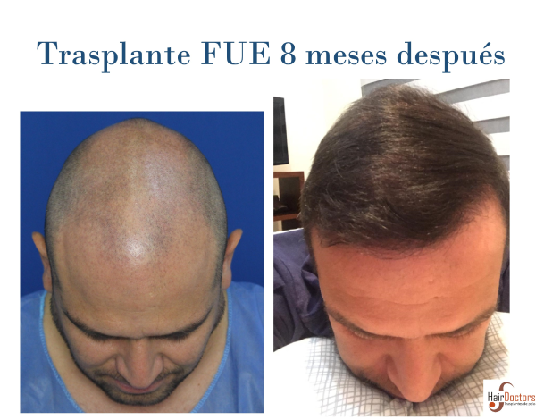
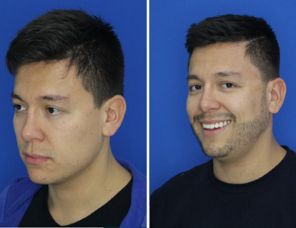
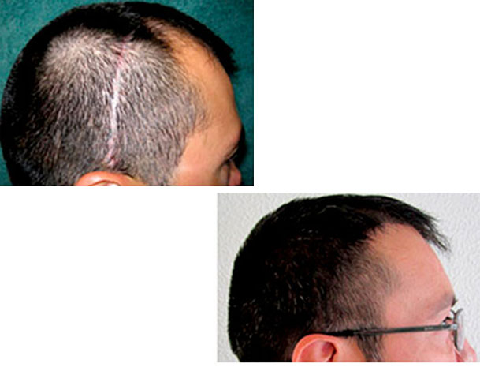
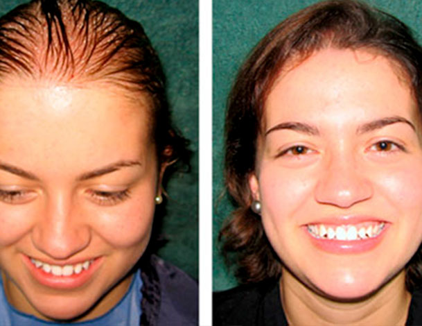

Nuestros trasplantes
Testimonios
Contáctanos
Llámanos
WhatsApp
Con nuestra ayuda recuperarás mucho más que tu pelo
Realiza tu consulta
Acepto los
términos y condiciones
y autorizo el tratamiento de datos personales.
Nuestros trasplantes
Trasplante capilar de pelo FUE
El trasplante de unidades foliculares es un procedimiento ambulatorio y con anestesia local.
Quiero saber más

Nuestros trasplantes
Trasplante de barba
Luce una barba como siempre la has deseado de forma natural y definitiva
Quiero saber más

Nuestros trasplantes
Trasplante de cicatrices
Es posible sembrar folículos sobre casi cualquier cicatriz (quemaduras, radiación, trauma, otras cirugías, etc).
Quiero saber más

Nuestros trasplantes
Trasplante en mujeres
El pelo para la mujer es factor primordial de su apariencia fisica, la mayoría de mujeres tienen una aclaración difusa o dispersa sobre todas las áreas del cuero cabelludo y aún no lo saben.
Quiero saber más

Anterior
Siguiente